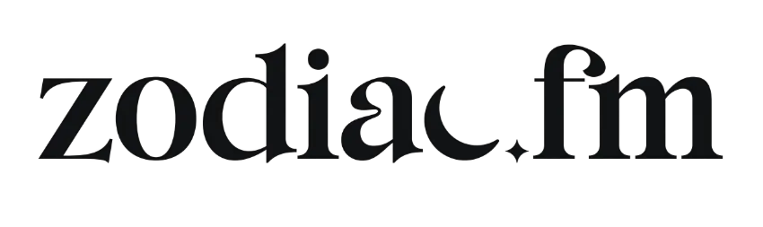

Your exact birth moment
Date, time, and place establish the astronomical positions. The calculation selects 248+ celestial data points from that chart.

Meta one-time offer discountA special offer for you.
Your exact birth moment becomes four personal frequencies, embedded inside music for meditation, visualization, your commute, or a walk around the park…
 Srini Pillay, M.D.Harvard Neuroscientist & Author
Srini Pillay, M.D.Harvard Neuroscientist & Author“Zodiac.fm helps people access aspects of themselves that have always been there.
Listening to your frequencies bypasses language and creates profound levels of self-awareness and coherence.
This leads to clearer decisions, more authentic relationships, and expanded possibilities.”
You were born connected, tuned into your purpose, what gives you joy, and the note you were born to play.
Then the conditioning began. Little by little, the world around you got louder, and your own voice became harder to hear.
Over time, you may have started living from a place that felt less like home. Feeling disconnected from other people is hard enough.
Feeling disconnected from yourself is harder, especially when some part of you knows the connection is still there.
If you are here, you have probably been trying to find your way back for some time.
You may have turned to meditation or yoga, astrology or Human Design readings, retreats, community, podcasts, or a deeper spiritual practice, all in the hope of reconnecting with yourself, other people, and the world around you.
And it is working.
Kind of.
 Zehra AsharyEntrepreneur and Wellness Leader
Zehra AsharyEntrepreneur and Wellness LeaderWhen I heard my frequencies for the first time, something in my chest unlocked.
I started listening every day because quietly everything in my life responded. It lets you finally feel the parts of yourself you have only ever read about.
 Amber HedrickFull Member of the Human Race
Amber HedrickFull Member of the Human RaceI feel like ME.
I feel like the person I've been trying to get back to for so long without forcing anything. It's just happening so naturally.
You have been finding your way back by quieting the conditioned self, stepping away from the noise, or learning more about who you are.
And it helps.
Zodiac works in the other direction.
Instead of turning everything else down, listening to your personal frequencies turns your authentic self up.
You do not have to silence every conditioned thought or wait for the world around you to become quiet.
Over time, the connected part of you becomes easier to hear, even when the world is loud.
Now the question is…

The conditioned self has hooks.
Life asked you to build walls and masks to fit in. And it is easy to become addicted to the comfort of the performed self, all the stored rules, stories, fears and strategies you picked up to get by.
It solved real problems and kept you safe, and nobody's to blame. But it isn't who you are.
Are you ready to be, actually be the unique, weird, quirky person you were born to be?
To serve your purpose and live the life the real you is designed to live?
If so, let’s take this ride:
Specific experiences from individual listeners, shown with the people who reported them. Their results are not promised outcomes.
 Jennifer K. HillGlobal Wellness Leader · Founder, OptiMatch
Jennifer K. HillGlobal Wellness Leader · Founder, OptiMatchInstead of 10 paid members, I got 30 paid members in 30 days.
Within 45 days, we had almost 40 paid members. It felt like the floodgates of abundance, prosperity, and purpose opened.
 Leanne ElyBest-Selling Author · Founder, Saving Dinner
Leanne ElyBest-Selling Author · Founder, Saving DinnerThis has been a total game changer for me.
The abundance-focused music has upleveled my meditation practice and helped me create a powerful energetic shift every day.
I have received multiple unexpected new very lucrative opportunities since I began tuning in.
Without doing anything but listening… The static is gone.
I finally feel like myself.
Your result is more than four numbers. It shows the frequency calculated for each life domain, the band each one lands in, and the music built around them.
Date, time, and place establish the astronomical positions. The calculation selects 248+ celestial data points from that chart.
The calculation produces a distinct value in Hz for Core, Love, Vitality, and Abundance.
Your values run continuously through cinematic, lyric-free music for meditation, focus, sleep, or everyday listening.
Your frequency is what your signal is. Your band is how you naturally process that part of your life.

Each band is a natural way of processing.
The spectrum is continuous, not a ladder. Everyone uses all four bands, and your placements do not move.
Together, the four placements become your Personal Frequency Profile.
Your chart is the input. Your bands are a read that a normal horoscope or Human Design chart does not give you.
You receive all four. The choice is simply where you want to begin today.

For identity, self-recognition, and the signal beneath the noise.

For connection, affection, and the way you show up with other people.

For momentum, creative drive, and getting into motion.

For work, opportunity, and the state you bring to what you are building.

It's like a little cheat code for experiencing your authentic vibration.
Because it's personalized to you, not generic. I use it every day.
During meditation, during visualization, sometimes I'll just sit down and breathe with it for five minutes. And I don't usually plug anything. This one earned it.
David McEwenTransformation Thought Leader · Over 12 Million YouTube ViewsDavid McEwen is a Zodiac affiliate.
Zodiac's internal 52-week study began with 300 members and 278 completed it. The recommendation, life-changing, and outcome percentages below describe members who used it as designed.
Study results describe participant reports, not guaranteed outcomes. These figures apply to members who averaged at least nine minutes per day and kept each of their four frequencies at 15% or more of total listening.
 Joey VaillancourtFounder and CEO
Joey VaillancourtFounder and CEOWithout doing anything but listening, I become a different person.
I shift into the version of me I actually want to be.
If you're tired of living out of tune with yourself, this is your invitation home.
 Amy WilcoxZodiac member
Amy WilcoxZodiac memberI am seeing a huge difference in how much more loving I am.
I'm more affectionate, more grounded. It fast-tracked clarity in my relationship. I knew who I was, so I saw him more clearly.
 Debra SilvermanAstrologer to Sting, Jennifer Aniston, and More
Debra SilvermanAstrologer to Sting, Jennifer Aniston, and MoreThis music tickled my soul and reminded me that there's such a connection between vibration, the stars, and the sounds that are coordinated by higher intelligence.
The frequencies helped me center more efficiently, it can aid in manifesting or anything that you do by tuning yourself to your Divine frequency.Alexander Molina IIZodiac member
I appreciate what you've done here.
Listen during meditation, visualization, walking, cooking, focused work, or for sleep. The product is designed to become part of ordinary life.

 Summer PhoenixHuman Design and Gene Keys Practitioner
Summer PhoenixHuman Design and Gene Keys PractitionerInstead of just studying your blueprint, you begin resonating with it.
If you are serious about embodying your work instead of just analyzing it, this is the missing layer.
 Pam KinzingerSound and Resonance Healing Practitioner
Pam KinzingerSound and Resonance Healing PractitionerZodiac.fm is like a birth note on steroids.
 Alex KikelTrainer to Olympians and Professional Athletes
Alex KikelTrainer to Olympians and Professional AthletesHaving it on in the background while I work has allowed me to slip into my flow state MUCH easier while having a greater sense of calm and ease.
 Tangie NadimiFounder · Feel Good Human Design
Tangie NadimiFounder · Feel Good Human DesignI went from ranting and complaining in my pages to writing in a way that felt hopeful and solutions oriented in only 9 minutes.
Before you begin
Don’t worry, this is a common question. Your birth time does affect the calculation of your frequencies. However, because Zodiac works like a tuning fork to create resonance and amplify your signal, if it is close enough you will still get an effect, just not as fast or clear as you would if it were exact.
Once you are a member, we will provide ways for you to get your birth time. And if you are not getting effects, you can change your birth time once a week until you experience resonance effects. This happens all the time, and 95% of the time we get there.
Choose 12:00 noon if you have no idea. Otherwise, make an educated guess.
You enter your birth details. We calculate four frequencies from 248 celestial data points. We embed those frequencies into music remastered up to 700 times to tune precisely to you.
Our beta showed listening for a minimum of nine minutes a day produced results. But most people listen for over an hour. Not because they have to. Because the music is good. Really good. And the more you listen, the more profound the results.
These aren’t generic meditation drones. Real composers. Real production. Your frequencies are embedded into each song.
Play it at home. In the car. At the gym. While you work. Build playlists. Loop your favorites. Fall asleep to it. This isn’t a practice you have to remember. It’s music you’ll actually want on.
Good. This isn’t about learning more information. It’s about your system recognizing its pattern from the inside. Knowing your chart cognitively is different from embodying it automatically.
And once you experience the intelligence of your chart from within, you will wonder how you functioned without it.
You don’t need to believe anything. The frequencies are calculated mathematically from your birth moment. Listen and notice what happens.
Yes. Meditation, breathwork, yoga, plant medicine, Qi Gong, prayer, and manifestation are dramatically enhanced by combining your Zodiac frequencies. Practitioners of almost every tradition combine Zodiac for exponential results.
Yes. No contracts, no hassle. Cancel in the app, or email support@zodiac.fm and a real human will help.
You’ll see your four frequencies in exact Hz. Where each one lands in your body. Your frequency distribution type and what it means. Your chart, mapped in a way no one has shown you before.
Reveal the four personal frequencies calculated from your birth moment.
Meta one-time offer discount
Reveal my frequenciesA special offer for you.